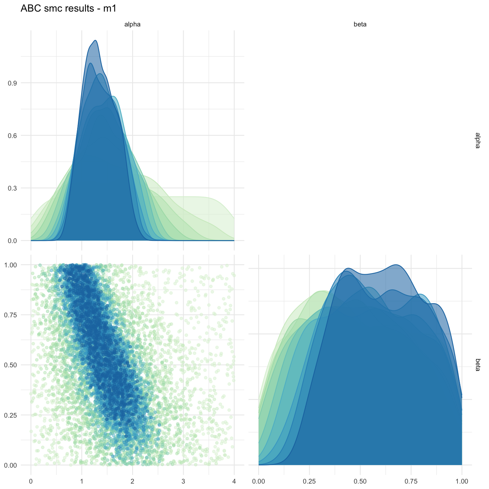
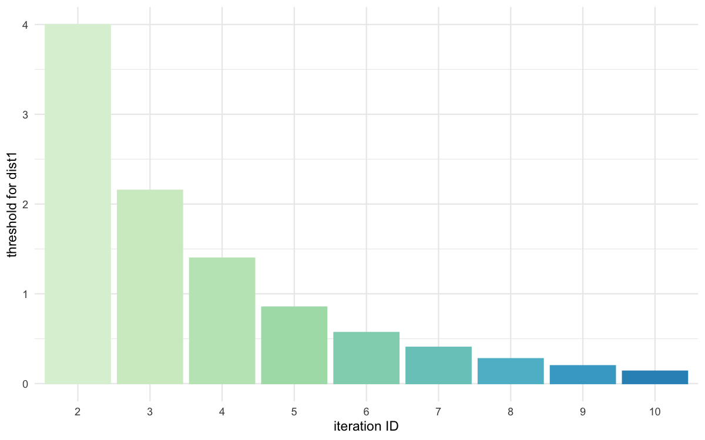
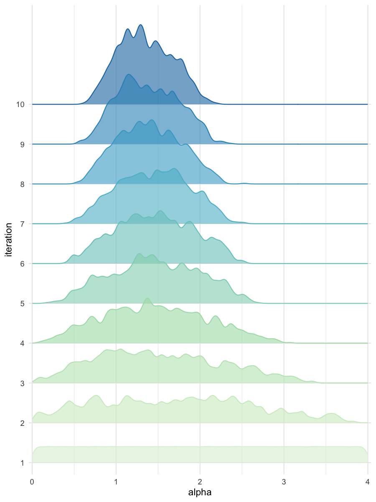
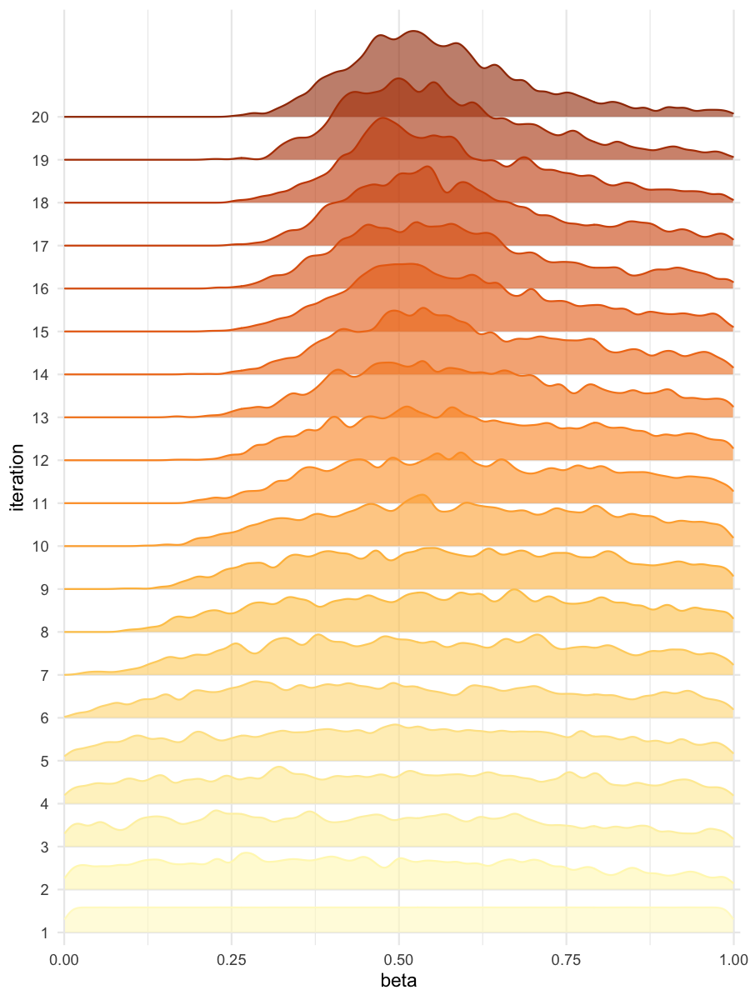

BRREWABC (Batched Resilient and Rapid Estimation Workflow through Approximate Bayesian Computation) : an R package designed to facilitate inference through a parallelized Approximate Bayesian Computation Sequential Monte Carlo (ABC SMC) algorithm. This package streamlines the process of conducting Bayesian inference for complex models by implementing efficient parallelization techniques.
Installation
You can install the development version of BRREWABC from GitHub with:
# install.packages("devtools")
devtools::install_github("GaelBn/BRREWABC")Usage
This is a basic example which shows you how to solve a common problem:
library(BRREWABC)
# model definition
compute_dist = function(x, ss_obs){
ss_sim = c( x[["alpha"]] + x[["beta"]] + rnorm(1,0,0.1),
x[["alpha"]] * x[["beta"]] + rnorm(1,0,0.1) ) # a very simple toy model
dist = sum((ss_sim-ss_obs)^2)
return(c(dist))
}
MODEL_LIST <- list("m1" = compute_dist)
PRIOR_DIST <- list("m1" = list(c('alpha', 'unif', 0, 4), c('beta', 'unif', 0, 1)))
# create a reference trajectory
sum_stat_obs = c(2.0,0.75)
# run abc smc procedure
res = abcsmc(model_list = MODEL_LIST, prior_dist = PRIOR_DIST,
ss_obs = sum_stat_obs, max_number_of_gen = 10, nb_acc_prtcl_per_gen = 1000,
new_threshold_quantile = 0.8, experiment_folderpath = "",
max_concurrent_jobs = 2, verbose = TRUE)
#> [1] "tmp/currentABCState.RData"
#> Check folder_path for : tmp
#> Folder created successfully.
#> Check folder_path for : res
#> Folder created successfully.
#> Check folder_path for : res/csv
#> Folder created successfully.
#> Check folder_path for : res/figs
#> Folder created successfully.
#> gen 1
#> threshold:
#> prtrbtn_krnl_sd: NA NA
#> -
#> gen 2
#> threshold: 3.737803
#> prtrbtn_krnl_sd: 1.155267 0.2888316
#> -
#> gen 3
#> threshold: 1.983287
#> prtrbtn_krnl_sd: 0.9096719 0.260107
#> -
#> gen 4
#> threshold: 1.24357
#> prtrbtn_krnl_sd: 0.7365027 0.2600087
#> -
#> gen 5
#> threshold: 0.7919258
#> prtrbtn_krnl_sd: 0.6140646 0.2642821
#> -
#> gen 6
#> threshold: 0.5143133
#> prtrbtn_krnl_sd: 0.5233506 0.2621831
#> -
#> gen 7
#> threshold: 0.3568089
#> prtrbtn_krnl_sd: 0.4602892 0.2574246
#> -
#> gen 8
#> threshold: 0.2562583
#> prtrbtn_krnl_sd: 0.4206442 0.2448884
#> -
#> gen 9
#> threshold: 0.1746439
#> prtrbtn_krnl_sd: 0.3752413 0.2300746
#> -
#> gen 10
#> threshold: 0.1286489
#> prtrbtn_krnl_sd: 0.3576637 0.2233128
#> -
#> Experiment done!
# get results and plots
all_accepted_particles = res$particles
all_thresholds = res$thresholds
plot_abcsmc_res(data = all_accepted_particles, prior = PRIOR_DIST, colorpal = "GnBu")
#> [1] "Plot saved as '.png'."
#> Registered S3 method overwritten by 'GGally':
#> method from
#> +.gg ggplot2
plot_densityridges(data = all_accepted_particles, prior = PRIOR_DIST, colorpal = "GnBu")
#> [1] "Plot saved as '.png'."
plot_thresholds(data = all_thresholds, nb_threshold = 1, colorpal = "GnBu")
#> [1] "Plot saved as 'png'."

Pairplot of all iterations

Threshold evolution over iterations

Density estimates for alpha

Density estimates for beta